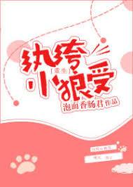

[El gong (seme) y shou (uke) no tienen relación de sangre, tampoco están en el mismo registro familiar, no comparten padre ni madre, esta es una declaración seria.] ~~~
En esta vida, Shu Ning fue una broma, incluso hasta su muerte. Su madre biológica lo trata como un trampolín, abriendo un camino para su hermano menor, solo para darse cuenta de todo esto al morir.
Shu Ning, que estaba sediento de amor maternal, era extremadamente trabajador, actuando como un niño bien educado frente a su padre, mientras peleaba con su hermano mayor, aunque su coeficiente intelectual no era alto, todavía jugaba trucos sucios al máximo. Alentado constantemente por los cálidos sentimientos de su madre, cuanto más obstruía a su hermano mayor, más valiente se volvía. Cuando se encontró con un percance, su madre tomó a su hermano menor y escapó a un lugar lejano, dejando a Shu Ning solo para soportar el crimen y ser encarcelado.
El amor es más sólido que el oro, su amante decidió abrazar a otro hombre.
Dando gran importancia a la amistad, no solo se tomaron el tiempo para visitar a Shu Ning en la cárcel y reírse de él, sino que incluso frotaron la herida con sal.
Su madre más querida y respetada ni siquiera se molestó en mostrar su rostro.
Sin embargo, cuando cerró los ojos, llegó su hermano mayor. La verdad era que fue Shu Heng quien hizo los arreglos para que él pudiera vivir cómodamente en prisión.
Si él no los hubiera seguido y fuera un hermano pequeño inteligente, ¿habría cambiado todo? En un abrir y cerrar de ojos, Shu Ning regresó a la época en que era estudiante de secundaria.
Hermano mayor controlador de dos caras gong X Pequeño lobo inteligente y lindo shou.
El hermano mayor piensa que el hermano menor es muy lindo, muy adorable, muy suave, ¿cómo podría estar tan cerca del ideal?
El hermano menor está pensando, jajaja… ese hermano mayor con parálisis del nervio facial podría sonrojarse? ¿Qué pasó con tu imagen fría y guapa? ¿Hacerse el tonto con solo un beso? ¿Qué pasó con tu misofobia? ¿Estoy sentado en tu regazo y todo tu cuerpo se puso rígido? ╮(╯▽╰)╭
Para evitar que su hermano mayor pensara que Shu Ning estaba detrás de la compañía, Shu Ning se basó en los recuerdos de su vida anterior para ganar un poco de dinero, volviéndose financieramente independiente mientras era un pantalón de seda, y también criando lentamente a ese hermano mayor suave e inmaduro, Shu. Ning sintió que estos días eran demasiado cómodos. Sin embargo... ¿por qué su hermano mayor se está volviendo cada vez más extraño? ¿Qué es esto de dormir juntos por calor? ¿Qué es ese beso de buenos días y buenas noches? ¿De verdad me tomas por un mocoso? Σ( ° △ °|||)
Nota: La parte 'Pantalones de seda' significa un hijo rico y hedonista.